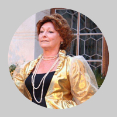
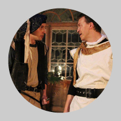
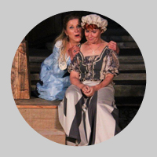
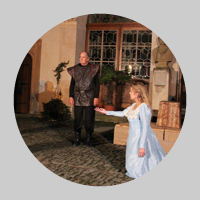

Marie Stuartovna
Friedrich Schiller
Režie, pøeklad, dramaturgická úprava a scéna: David Kraus
Kostýmy: Kvìta Hla Shwe
Svìtla a zvuk: Pavel Andrs
Asistentka režie: Jana Urbanová

Realizace kostýmù: Radka Talpová, Kvìta Hla Shwe
Hudba – práva zastoupena OSA
Podìkování: Vojtìchu Hájkovi, Kvìtì Hla Shwe, Radce Talpové, Marii Krbové, Šporkovu triu, Tomáši Vojtìchovi - Photo-ARTS, Petøe Krátké, Ljubì Benešové, Luïku Frenclovi a zamìstnancùm hradu Køivoklát, Tomáši Øehoøovi a zamìstnancùm zámku Žleby, Vladimíru Zámišovi a firmì Trico
Obsazení:
Alžbìta, královna anglická: Ivana Krausová
Marie Stuartovna, královna skotská: Radka Tesárková
Robert Dudley, hrabì z Leicesteru: Lukáš Kunst
Georges Talbot, hrabì ze Shrewsbury: Stanislav Oubram / Milan Špale
William Cecil, hrabì z Burleighu: Jiøí Novotný
William Davison, státní sekretáø: Johan Klesal
Amias Paulet, rytíø, Mariin strážce: Tomáš Vlèek
Mortimer, jeho synovec: Johan Klesal
Hrabì Aubespine, francouzský vyslanec: Roman Solèány
Melvil, Mariin hofmistr: Pavel Betka
Hanna Kennedyová, Mariina chùva: Zoja Oubramová
Margaret Curlová, Mariina komorná: Jana Nanka Fittlová / Lenka Olšanová
Stráže: Roman Solèány, David Kraus
Šašek: Filip Sychra
Premiéry v rámci Divadelních slavností 2012 – 3. srpna zámek Žleby a 13. srpna hrad Køivoklát Inscenace vznikla také díky grantu Mìstské èásti Praha 7